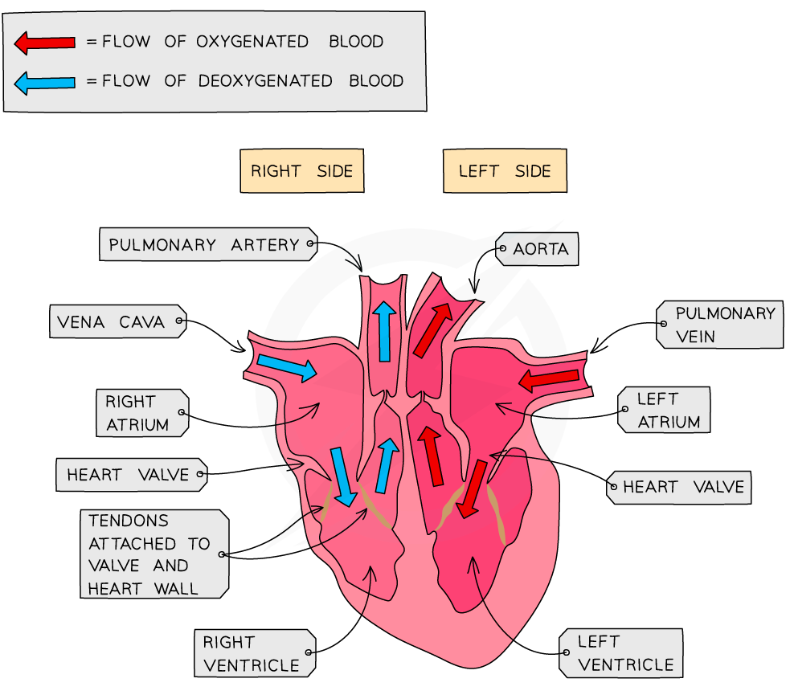

school
The heart
- The heart is divided into two parts
- The left part of the heart (usually shown on the right-hand side)
takes blood to the body
- It is usually coloured red
- Blood from the lungs comes in through the pulmonary vein, and goes
to the body through the aorta
- The right part of the heart (usually shown on the left-hand side)
takes blood to the lungs
- It is usually coloured blue
- Blood from the body comes in through the vena cava, and goes to the
lungs through the pulmonary artery
- Both parts of the heart have an atrium, where the blood comes
in
- The blood from the atrium is pushed into the ventricles, which then
push the blood out either through the aorta or the pulmonary artery
- Both atriums have valves to stop the blood from flowing back into
them
- The right-hand side has the tricuspid valve, which is part of the
right atrium, and the semilunar valve, which is part of the right
ventricle
- The left-hand side has the bicuspid valve, which is part of the left
atrium, and the semilunar valve, which is part of the left
ventricle
- The heart is made of cardiac muscle

The heart|700
- The coronary arteries supply blood to the heart
- These can be blocked by fatty plaques which contain cholesterol,
causing coronary heart disease
- The blood flow is blocked or limited if an artery is blocked
- This causes a heart attack to occur, since the heart cannot contract
anymore
- Some causes of coronary heart disease include:
- A poor diet, with a large amount of saturated fat
- Stress
- Smoking
- Fetuses have a hole in their heart, specifically, between the
atriums
- This is because the oxygenated blood is sent directly from the right
atrium to the left atrium
- The blood is then pumped to the left ventricle, and then the whole
body